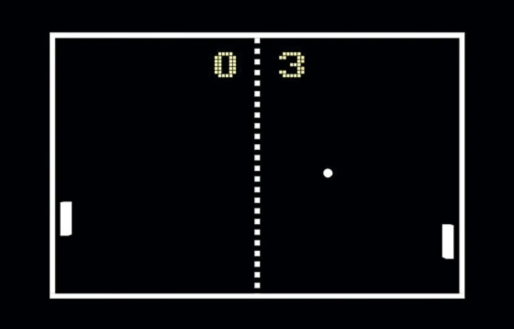

HISTOIRE DU JEU VIDÉO
Selon la définition que l'on accepte du jeu vidéo, son histoire peut commencer aux alentours de 1950 avec l'idée de Ralph Baer ou bien en 1952 avec OXO, 1958 avec Tennis for Two de William Higinbotham, ou encore en 1962 avec Spacewar!, qui est la date la plus communément admise. Pong, en 1972, est quant à lui le premier jeu dont le gameplay est suffisamment accrocheur et addictif pour lui faire connaître le succès auprès du grand public.
Si Pong n'a pas inventé le jeu vidéo, il a donné le coup d'envoi à l'industrie vidéoludique. Celle-ci connaît une croissance explosive et fébrile aux États-Unis, jusqu'en 1983 où elle subit un krach qui la fait migrer vers le Japon. C'est là qu'elle voit sa renaissance, notamment grâce à la console NES de Nintendo et au jeu Super Mario Bros. en 1985, qui inaugure une nouvelle philosophie dans la conception des jeux vidéo : plus riches et ouverts à tous les publics.
Depuis, le secteur du jeu vidéo est en croissance continue et, à partir de 2002, son chiffre d'affaires mondial atteint 10 G$, dépassant celui d'Hollywood.
Parmi les personnages emblématiques du jeu vidéo, peuvent être cités : Alex Kidd, Crash Bandicoot, Donkey Kong, Kirby, Lara Croft, Link, Mario, Mega Man, Pac-Man, Pikachu, Rayman, Samus Aran, Solid Snake, Sonic.

Les jeux vidéo ne se font connaitre du grand public qu'à partir des années 1970 avec la commercialisation des premières bornes d'arcade ainsi que les consoles de jeu vidéo, pouvant faire tourner une dizaine de jeux simplistes. Le jeu vidéo devient alors une industrie, évoluant avec la technologie et marqué par un krach en 1983, à la suite de l'inondation des modèles sur le marché après le boom des années 1970.
En 2021, quatre générations de consoles se sont succédé, la dernière étant composée de la Nintendo Switch, la PlayStation 5 et la Xbox Series X. L'histoire du jeu vidéo s'étend également sur PC, qui représente aujourd'hui une forte proportion du marché et qui prend de plus en plus de place grâce à la distribution dématérialisée, via Steam notamment. Depuis les années 2010, le jeu vidéo se développe également sur smartphone, grâce à des appareils de plus en plus puissants et des écrans de plus en plus grands, permettant le développement de jeux du même acabit que ceux des années 2000 sur consoles portables.